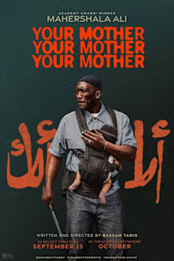
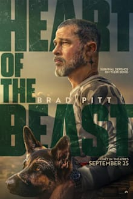
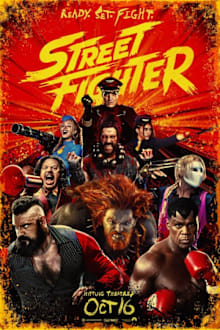
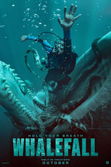

Theaters · Raleigh area · Fri Oct 16 + Sat Oct 17, 2026
Alamo Saturday: Your Mother Your Mother Your Mother. Heart of the Beast if Bekah balks.
BLUF: Book Your Mother Your Mother Your Mother, Saturday 6:45 at Alamo Raleigh. It's the best-reviewed film playing (96% RT, 94% audience, Metacritic 84): Mahershala Ali as a devout hitman raising his kids alone, pulpy with a big heart. If the trailer loses Bekah, see Heart of the Beast, Saturday 6:45 at Regal White Oak (94% audience, A- CinemaScore). Buy Alamo tonight.
Tonight's test
- Pull up the official trailer for Your Mother Your Mother Your Mother on YouTube and watch it together. About 2 minutes.
- If Bekah's in, book Alamo Saturday 6:45. If the hitman stuff loses her, book Heart of the Beast at White Oak Saturday 6:45 and bring your ID for the military discount.
- Already saw Heart of the Beast last weekend? Skip the test. It's Your Mother or stay home.
The picks

Your Mother Your Mother Your Mother YOUR PICK
1h51m · R · Bassam Tariq · Mahershala Ali, John Cho, Giancarlo Esposito
A devout Muslim hitman in Houston loses his wife and has to protect his kids, newborn included, while his faith and his job pull opposite ways.
RT 96% / 94% audience · Metacritic 84 · Letterboxd 4.0
Genre hybrid with a real voice behind it: neo-western crime pulp built around faith and fatherhood, from the director of Mogul Mowgli. Critics keep saying "big heart," which is the opposite of the cold character-study problem. Week four, in about 34 theaters nationally, and three of them are here. Bekah: better odds than the logline suggests. A 94% audience score means it plays to a room. The risk is the R-rated violence and a morally gray lead.

Heart of the Beast BEKAH'S PICK
1h41m · PG-13 · David Ayer (Fury) · Brad Pitt
Retired Special Forces vet and his combat dog survive a plane crash in the Alaska bush.
RT 85% / 94% audience · Metacritic 69 · CinemaScore A-
Holdover from last week. Sincere, original, made for a crowd. No directorial voice, so it's an okay night for you, not more. It's gone from Alamo and Fenton; Regal and AMC still have it. Bekah: high odds. Expect to cry about the dog.
Your Mother Your Mother Your Mother
| Theater | Fri 10/16 | Sat 10/17 |
|---|
| Alamo Drafthouse Raleigh | 6:45 · 9:45 | 6:45 · 9:45 |
| Paragon Fenton, Cary | not playing | not playing |
| Regal Crossroads, Cary | 5:55 · 8:45 | 5:55 · 8:45 |
| Regal North Hills, Raleigh | 6:00 · 8:45 | 6:00 · 8:45 |
| Regal White Oak, AMC Holly Springs | not playing | not playing |
Heart of the Beast
| Theater | Fri 10/16 | Sat 10/17 |
|---|
| Alamo Raleigh, Paragon Fenton | not playing | not playing |
| Regal White Oak, Garner | 6:20 · 9:20 | 6:45 · 9:20 |
| Regal Crossroads, Cary | 6:15 · 9:05 | 6:15 · 9:05 |
| Regal North Hills, Raleigh | 6:25 | 7:10 |
| AMC Dine-In Holly Springs | 7:45 · 10:30 | 7:45 · 10:30 |
Evening shows, all standard format. Pulled Thursday from Atom Tickets and Fandango. Fenton has neither pick; its Axis15 screen is running Street Fighter all weekend. Regal military discount is box office only with ID.
Skip

Street Fighter SKIP
1h59m · PG-13 · Kitao Sakurai · Andrew Koji, Noah Centineo, Jason Momoa
1993-set reboot. Ryu and Ken get pulled back into the World Warrior tournament.
Reviews held until Thursday · Letterboxd 3.0 · Kalshi RT forecast 43%
Bekah's nostalgia lane and it's on Fenton's Axis15, but it fails the franchise bar. The fights, 2D anime flashbacks and 90s camp get praise; the story, jokes and sequel-bait ending don't. Early reviews: "pure fan service," "an opportunity squandered." Skip.

Whalefall SKIP
1h46m · PG-13 · Brian Duffield · Austin Abrams, Josh Brolin
A diver gets swallowed by a sperm whale with an hour of air left.
RT 74% · Metacritic 62 · Letterboxd 3.3
Last week it looked like a both-of-you option. Reviews split: tense and gross for some, "unintentionally preposterous" for Variety, and heavy on father-son sentiment. Not enough for a date night. Skip.
Already seen: Primetime, Resident Evil, Toy Story 5. Already planned: You Can See Everything (Metacritic 95). Also cut: Sense and Sensibility (75% RT, PG, fine but not essential), Other Mommy (D CinemaScore), Verity, The Social Reckoning, Digger, Practical Magic 2. The History of Concrete has left area theaters. Re-release: Spirited Away, starting Saturday.
Next 2-3 weeks
- Wildwood (Laika, Travis Knight). Stop-motion fantasy from Colin Meloy's book, from the Coraline and Kubo studio. Oct 23. RT 100% on 21 early reviews. Both of you. Best bet on the calendar.
- Wicker (Alex Huston Fischer and Eleanor Wilson). Olivia Colman orders a husband made of wicker in a medieval village; Alexander Skarsgård plays him. Oddball fable romance, closest thing to Wes Anderson coming. Oct 23. RT 90%, Metacritic 63. Both.
- A Talent for Murder (Anton Corbijn). Helen Mirren as Patricia Highsmith. Oct 23. Benny.
- Klara and the Sun (Taika Waititi, Ishiguro adaptation). Oct 23. No reviews yet.
- The Only Living Pickpocket in New York (Noah Segan, Rian Johnson regular). Wide Oct 30. Benny.
- Further out: Martin McDonagh's Wild Horse Nine, Nov 6, Metacritic 79. Benny. Clayface (Oct 23) cut, superhero.
Sources: The Numbers, Rotten Tomatoes, Metacritic, Atom Tickets, Fandango, Letterboxd, World of Reel, Variety, Comic Basics, Fiction Horizon, Weekend Warrior. Final version, Oct 15, 2026.